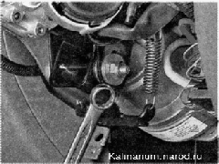
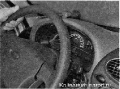
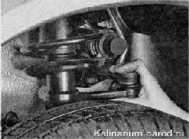

Проверка рулевого управленияДля выполнения работы потребуется помощник. Последовательность выполнения 1. Подготавливаем автомобиль к выполнению работы. 2. Визуально проверяем состояние защитных чехлов наконечников рулевых тяг и рулевого механизма. Поврежденные чехлы (порванные, с трещинами) необходимо заменить. 3. Убеждаемся, что рычаг фиксации рулевой колонки поднят до упора. Пытаясь перемещать рулевое колесо в вертикальной плоскости, проверяем надежность крепления рулевой колонки механизмом фиксации. Если рулевая колонка перемещается, снимаем накладки рулевой колонки и ключом на 13 мм подтягиваем гайку оси рычага фиксации рулевой колонки. 4. Пробуя перемещать рулевое колесо вдоль оси рулевого вала, убеждаемся в отсутствии люфта рулевого колеса на шлицах вала и вала в рулевой колонке. 5. Для проверки люфта в рулевом управлении поворачиваем рулевое колесо в положение, соответствующее движению прямо. На панель приборов укладываем шлицевую отвертку таким образом, чтобы ее лезвие располагалось рядом с ободом рулевого колеса (для надежности ее можно закрепить малярным скотчем). Поворачивая рулевое колесо направо до начала поворота колес (выбирая люфт), а затем налево и ориентируясь по лезвию отвертки, мелом, отрезками проводов или иным способом отмечаем эти положения на ободе. Люфт не должен быть более 5" (или 18 мм) при измерении по наружной части обода. Увеличенный люфт свидетельствует о необходимости поиска и устранения неисправности. Как правило, в первую очередь в рулевом управлении выходят из строя наконечники рулевых тяг. 6. Для проверки отсутствия люфта в наконечниках рулевых тяг, помощник слегка покачивает рулевое колесо из стороны в сторону. Кладем руку на место соединения рулевой тяги с поворотным рычагом стойки подвески так, чтобы ладонь касалась их одновременно. При появлении люфта в наконечнике рулевой тяги, будет ощущаться смещение поворотного рычага относительно тяги. 7. Проверяем затяжку гаек болтов карданного шарнира рулевой колонки. 8. Повторяем проверку с другой стороны автомобиля. Неисправные шарниры заменяем. 9. При покачивании рулевого колеса из стороны в сторону прислушиваемся к работе рулевого механизма. Стук со стороны правого края рулевого механизма свидетельствует об износе опорной втулки. Неисправный рулевой механизм снимаем и ремонтируем либо заменяем. 10. Включаем зажигание — на щитке приборов должна загореться контрольная лампа неисправности электроусилителя рулевого управления. Запускаем двигатель. Контрольная лампа должна погаснуть, рулевое колесо должно легко вращаться одной рукой. Загорание лампы во время работы двигателя свидетельствует о неисправности электроусилителя и необходимости его ремонта. Рекомендация. Ремонтировать электроусилитель рулевого управления следует в специализированной ремонтной мастерской. |